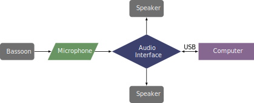

This piece was written in 2007 for Saxton Rose and is published by the American Composers Alliance and can be obtained through their website. The piece is an improvisational piece for the bassoonist as well as for the electronics.
The patch was not obtained for review, but the setup is similar to other pieces with Max/MSP. A microphone goes through an audio interface to the computer which does the processing. Then the sound goes to the speakers from the computer.
A setup diagram for the piece can be found below. 
©2024 by Benjamin Bradshaw
Logo ©2024 by Hannah Bradshaw